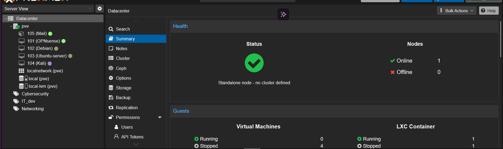

HomeLab
HomeLab is a project page for infrastructure experiments, automation, and services that you can keep improving over time.

This one fits a systems-oriented story best: a place to test tools, keep services reliable, and learn from operating them yourself.
Overview
Learning isn't only done in class, but also outside of it. That is what I wanted to achieve here, a real, tangable project I could be proud of that I set up myself outside of school, hosting experiments I wanted to tinker with outside of school. A place to learn by doing, and to share what I learned with others.
Technologies
- Proxmox